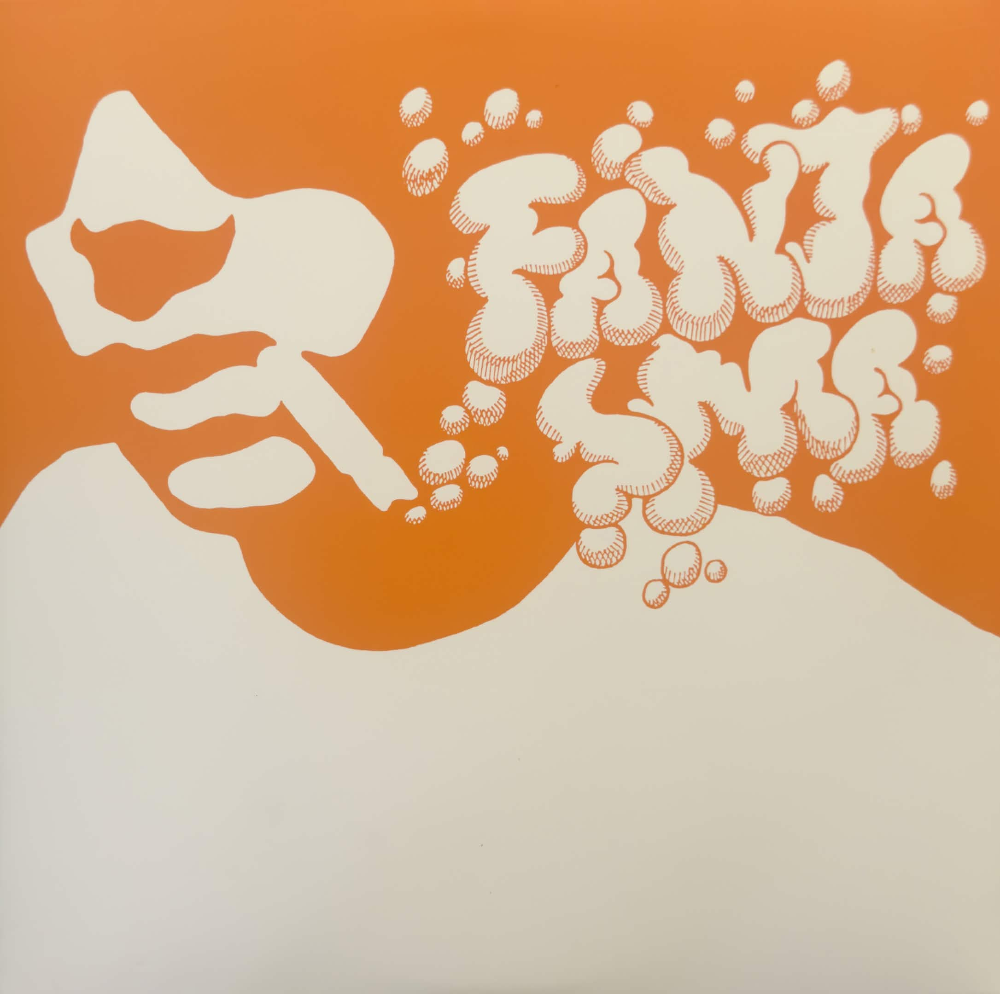
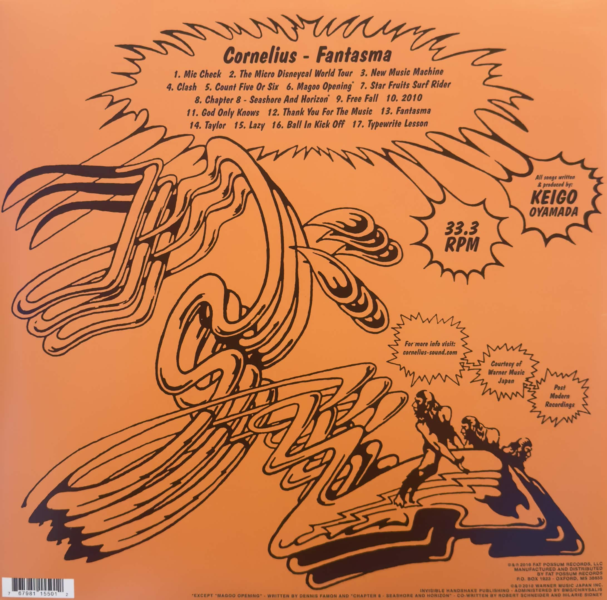
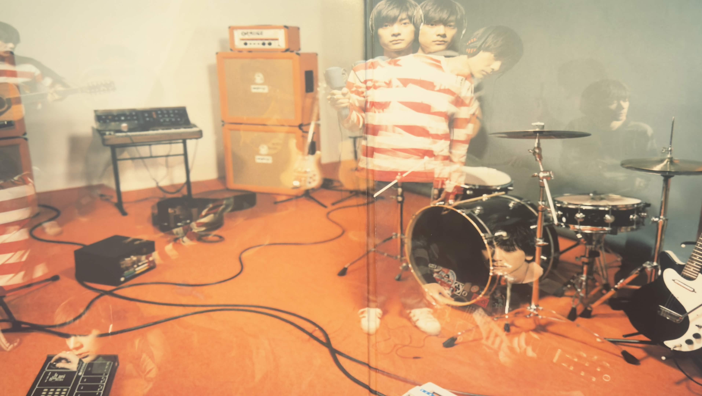

Listen to a song from this album!

This is a very personal album in the sense that I fully understand why a lot of people might not find it as good as I do or might just think it’s “alright.” This album is fucking RIDICULOUS. It is so God damn wacky and fun and bonkers that it is just straight up cartoonish. I first found this album the summer of 2025 in the “suggested albums for you” section. I was halfway through the first song thinking “this is pretty nice” then out of nowhere the whole song transforms from a chill hip hop track into a song that sounded like it came from another universe.
My first time listening to this album i literally thought, “Wow this is a trip” which was kind of intentional? Cornelius said himself that he wanted this album to be an experience about music. It’s a very energetic and vibrant journey. My interpretation might be wrong, but for me at least, Fantasma is a very emotion driven album that serves as a giant “I love you” to music as an art form. The album is presented to the listener as if they’re in the studio while it’s being made, the opening track “Mic Check” is, well, a mic check, songs will start out kind of empty or with just a few instruments, and slowly it’ll build up into this gigantic climax, showing the process of making music, and so many of the songs on here talk about different aspects of music. On top of that, a big part of the nature of Shibuya-Kei music is to draw from several genres, and this album goes all in on that aspect. This album has hip hop, psychedelia, noise pop, indie rock, art pop, indietronica, post-rock, breakbeat, chiptune, shoegaze, etc. it’s a very stitched together sounding album.
Speaking of how it sounds, it manages to pull off all these different styles magnificently. The opening track “Mic Check” does such a good job at preparing you for what’s to come, you know that this album’s going to go into random directions that you’re not expecting it to. That beat switch I talked about earlier is truly incredible, the wall of sound created by this album is nuts. Every song has a peak and every time there’s just so many sounds and colors and things blipping in and out of existence that it’s really only comparable to a dream. This directly transitions into The Micro Disneycal World Tour, which is a song that I can best compare to like, the Small World ride at Disneyland. It’s wacky and fun with super upbeat and it does the same thing, song starts out pretty simple, some weird instrumentals from time to time, and then out of nowhere it just transforms into this completely different song. You would expect this cycle to get kind of boring quickly, but even after almost a year of listening to this record, I’m still so enthralled by it because on a lot of tracks on here the first half of a song and the second half are just completely unrecognizable from each other it’s awesome.
Star Fruits Surf Rider is track 7, a nearly six minute blend of pop rock, breakbeats, and a super rich spacey vibe. I love how this song changes over time and stays entertaining throughout its whole runtime by incorporating so many different sounds into one track. Directly afterwards we have Chapter 8: "Seashore and Horizon", a beautiful accoustic pop track and a very nice change of pace from what we've heard so far. The song alternates between two segments, indicated by the sound of a button being clicked, and both of them are equally endearing and lovely.
Afterwards we have New Music Machine (the song you're hearing if you clicked the play button) which is legit one of my favorite songs of all time, such a super upbeat and energetic noise pop track that I get lost in every time i listen to it which I strongly believe to be intentional. The end of the song starts to brew up this droning sound which to me, reflects that feeling of getting so lost in a song that everything around you just starts to fizzle out as the song demands your full attention. Clash is a song about the feeling of experiencing live music, and one where our protagonist talks about him meeting a girl at a club, and I think for people who go to shows a lot, we tend to forget just how wonderful of a feeling it really is, you’re here with dozens or if it’s a big concert, potentially hundreds or thousands of people, all coming together for a shared love of music, and this song makes note of how fantastic that can be.
Jumping ahead a bit, God Only Knows, which borrows the song title from The Beach Boys track, and was a huge inspiration for Cornelius, is easily the most beautiful song on the album, drawing a lot of elements from post-rock and also having the longest runtime at 7 minutes and 39 seconds, and it’s a song about a dying man who’s singing a song to himself in his final moments, showing how music can intertwine itself with your life to such a high caliber—I mean something that people often talk about is what songs they want to be played at their funerals, music really can be that significant to someone. And then the ending track, Thank You for The Music, it’s the last hurrah as the song blends elements of many previous tracks together into a super lively and twangy finale where Cornelius bids the listener farewell. It starts switching between songs on the album as if you’re switching between channels on the tv before you hear the sound of a UFO taking off and blasting into outer space, a perfect end to such a crazy ass album.
Even though that is the end of the main album, the American release of Fantasma also brought with it four bonus tracks. Of these four I want to talk about Typewrite Lesson, an absolutely fantastic psychedelic track that's one of the best tracks on the album. This song is nearly perfect, but the reason I bring this song up is because after I bought the record, this song and the album blew up on the art side of Instagram and TikTok and the price of the records shot up. So thank you artists because my $45 record is now worth $100.
I just love Fantasma so much man, it’s an album that knows what it’s trying to do and is so unapologetically itself without trying too hard to be. I’ve never seen an album embrace its personality so much in the same way that this album does. It takes the listener through such a fun, animated journey that really is unlike anything else. Even if you don’t necessarily like this album, I feel like it’s such a bizarre listening experience that it’s a must listen for anyone.